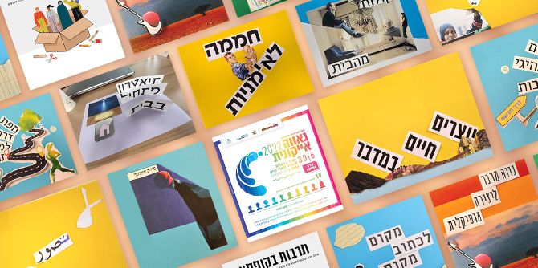

תוכנית מנדל למנהיגות תרבות בנגב כוללת בין יחידות הלימוד שלה גם יחידה בשם "רכיב מעשי אישי". מדובר במהלך למידה שהניב מסמך ובו מפרט ומפרטת כל עמית ועמיתה מיזם, פרויקט או רעיון מונחה חזון שיכול לחולל שינוי לטובה בשדה התרבות בנגב. הרכיב המעשי האישי, מגלם ומזקק את מודל מנהיגות התרבות של כל אחת ואחד מן העמיתים והעמיתות, וביותר ממובן אחד, מספק הזדמנות לבחון את השינוי באופני החשיבה, הפעולה וההובלה של כל עמית ועמיתה בעקבות ההשתתפות בתוכנית.
עמיתות ועמיתי מחזור ד' עבדו על הרכיבים המעשיים האישיים שלהם לאורך כל שנת הלימודים, בהנחיית צוות מסגל מרכז מנדל למנהיגות בנגב: מנהלת התוכנית ד"ר חגית דמרי, חברת הסגל המלווה את התוכנית פרופ' דנה אריאלי, ולצדם ד"ר יאיר ורון וישראל שורק. כדי לאפשר לעמיתים ולעמיתות לשפר את אופן הצגת הרעיונות ולקבל משובים מעצבים במהלך העבודה זומנו להם שני אירועים של הצגת פרויקטים.
ב-13 באפריל 2022 נערך במרכז מנדל למנהיגות בנגב אירוע בסגנון פצ'ה קוצ'ה ובו ניתנו לכל עמית ועמיתה שבע דק להצגת הפרויקט ושבע דק לקבלת משוב בעל-פה מדמות אחת מתוך צוות מגיבים ומגיבות שנבחר מראש. הקהל שישב באולם והורכב מהעמיתות והעמיתים האחרים, אורחים וסגל המרכז הוזמן להגיב להצגות בכתב, ולהכניס את הטקסט למעטפה ייעודית, כך שבתום האירוע קיבלו כל עמית ועמיתה מעטפת משובים.
האירוע השני נערך בחודש יוני ובו נפגשה הקבוצה בבניין הקרן שבירושלים עם פרופ' יהודה ריינהרץ, נשיא קרן ג'ק, ג'וזף ומורטון מנדל. לקראת המפגש הכינו העמיתים הצגות עצמיות והצגות של הפרויקטים, ועל בסיס הצגות אלו התנהל שיח ער ומשמעותי עם פרופ' ריינהרץ.
בקישור להלן תוכלו למצוא את תקצירי המסמכים וכן מידע על העמיתות והעמיתים שיצרו אותם. מרבית הדימויים שמלווים את התקצירים נוצרו על-ידי העמיתות והעמיתים במהלך סדנת עבודה בהובלת פרופ' עודד עזר, שסייע להם לתרגם את הרעיונות לשפה גרפית.
{kind=link}